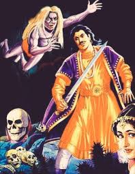

19. બ્રાહ્મણ કુમારની વાર્તા
|
બેતાલનો પીછો કરતી વખતે રાજા વિક્રમાદિત્ય શીશપાના ઝાડ પાસે પહોંચ્યા અને કોઈક રીતે બેતાલને ખભા પર ઊંચકીને આગળ
વધવા લાગ્યા.
પહેલાની જેમ, બેતાલ રસ્તો, મોટો હોવાથી, રાજનને વાર્તા કહેવાનું શરૂ કરે છે. બેતાલ કહે છે...

વર્ષો પહેલાની વાત છે, જ્યારે રાજા મહાસેન ઉજ્જૈન શહેરમાં રાજ કરતા હતા. એ જ રાજ્યમાં એક બ્રાહ્મણ રહેતો હતો,
જેનું નામ હતું વાસુદેવ.
તેમનો એક જ પુત્ર હતો, ગુણકર. તે નામમાં સારો હતો પણ તેનામાં કોઈ ગુણ નહોતો. તે માત્ર દિવસ-રાત જુગાર રમતા હતા.
તેના પિતા જુગારમાં કમાતા તમામ પૈસા તે ગુમાવશે. તેની બે બહેનો પણ હતી. તેને તેમની પરવા પણ ન હતી. તે દિવસ-રાત
જુગાર રમવામાં વ્યસ્ત હતો.
પોતાના પુત્રની આવી હાલત જોઈને બ્રાહ્મણ ખૂબ નારાજ થઈ ગયો. એક દિવસ વાસુદેવે વિચાર્યું, હું જે કમાઉં છું તે
જુગારમાં ખર્ચી નાખું છું.
એમ વિચારીને તેણે પુત્ર ગુણકરને ઘરની બહાર ફેંકી દીધો. ઘરેથી નીકળતાની સાથે જ તે બીજા રાજ્યમાં પહોંચી ગયો.
ત્યાં તે ભૂખ્યો અને તરસ્યો ભટકતો રહ્યો,
તેને ન તો કોઈ કામ મળ્યું કે ન ખાવા માટે કંઈ. આ બધું થઈ રહ્યું હતું ત્યારે એક દિવસ તે બેભાન થઈ ગયો.
જ્યારે ત્યાંથી પસાર થતા એક જ્ઞાની માણસે તેને જોયો ત્યારે તે તેને પોતાની સાથે ગુફામાં લઈ આવ્યો.
ભાનમાં આવ્યા પછી, યોગીએ છોકરાને પૂછ્યું, "તું શું ખાશે?" બ્રાહ્મણ પુત્ર કહે છે, “તમે યોગી છો, તમારી પાસે જે
છે તે ખવડાવી શકશો.
હું જે ખાવા માંગુ છું તે કદાચ તમારી પાસે નથી." આ સાંભળીને યોગીએ કહ્યું, "તમે જ મને કહો, તમારે શું ખાવાનું
છે?"
આ સાંભળીને ગુણાકરે પોતાની ઈચ્છા વ્યક્ત કરી, જે સાંભળીને યોગીએ પોતાની સિદ્ધિની મદદથી પોતાની પ્રિય થાળી પ્રગટ
કરી.
છોકરો આશ્ચર્યચકિત થઈ ગયો, પહેલા તેણે ભોજન લીધું અને પછી સિદ્ધપુરુષને પૂછ્યું, "તમે આ ચમત્કાર કેવી રીતે
કર્યો?" યોગીએ કશું કહ્યું નહિ,
માત્ર અંદર જવાનો ઈશારો કર્યો. અંદર જતાં જ તેણે એક મોટો મહેલ અને દાસીઓ જોઈ. બધાએ તેની સારી સેવા કરી અને તે
આરામથી સૂઈ ગયો.
નિંદ્રામાંથી જાગીને તેણે ફરી એ જ પ્રશ્ન સિદ્ધપુરુષને પૂછ્યો. યોગીએ કહ્યું, "તમારે આની સાથે શું લેવાદેવા છે,
તમે અહીં થોડા દિવસ મહેમાન બનીને રહો અને વ્યવસ્થાનો આનંદ લો." બ્રાહ્મણ પુત્ર મક્કમ હતો અને તેણે કહ્યું કે તે
પણ આ સિદ્ધિ મેળવવા માંગે છે.
અસ્વસ્થ થઈને યોગીએ તેને પદ્ધતિ જણાવી અને કહ્યું કે હવે જાવ અને મનથી ધ્યાન કરો.
 થોડા સમય પછી તે ધ્યાન પૂર્ણ કરીને પાછો ફરે છે. ત્યારે યોગી કહે છે, “તમે બધું બરાબર કરી રહ્યા છો. આ પહેલો
માઈલસ્ટોન હતો જે તમે પાર કર્યો છે.
હવે તમારે બીજા સ્ટોપ તરફ આગળ વધવું પડશે.” તેણે કહ્યું, "હું પણ તે જ કરીશ, પરંતુ બીજો સ્ટોપ શરૂ કરતા પહેલા
હું એકવાર મારા ઘરે જવા માંગુ છું.
" સિદ્ધ યોગીએ કહ્યું, "જાઓ, કૃપા કરીને જાઓ." જતા પહેલા બ્રાહ્મણ પુત્રએ યોગીને તેના પરિવાર માટે ભેટ માંગી.
યોગીએ તેમની સિદ્ધિને કારણે તેમને ઘણી ભેટો આપી.
તે પછી તેણે પૈસા માંગ્યા, સિદ્ધ પુરુષે તેની જાણકારીના આધારે તેને ઘણા પૈસા આપ્યા. તે પછી તેણે પોતાના માટે
સારા કપડા માંગ્યા, યોગીએ તેને તે પણ આપ્યા.
થોડા સમય પછી તે ધ્યાન પૂર્ણ કરીને પાછો ફરે છે. ત્યારે યોગી કહે છે, “તમે બધું બરાબર કરી રહ્યા છો. આ પહેલો
માઈલસ્ટોન હતો જે તમે પાર કર્યો છે.
હવે તમારે બીજા સ્ટોપ તરફ આગળ વધવું પડશે.” તેણે કહ્યું, "હું પણ તે જ કરીશ, પરંતુ બીજો સ્ટોપ શરૂ કરતા પહેલા
હું એકવાર મારા ઘરે જવા માંગુ છું.
" સિદ્ધ યોગીએ કહ્યું, "જાઓ, કૃપા કરીને જાઓ." જતા પહેલા બ્રાહ્મણ પુત્રએ યોગીને તેના પરિવાર માટે ભેટ માંગી.
યોગીએ તેમની સિદ્ધિને કારણે તેમને ઘણી ભેટો આપી.
તે પછી તેણે પૈસા માંગ્યા, સિદ્ધ પુરુષે તેની જાણકારીના આધારે તેને ઘણા પૈસા આપ્યા. તે પછી તેણે પોતાના માટે
સારા કપડા માંગ્યા, યોગીએ તેને તે પણ આપ્યા.
જ્યારે તે બધું લઈને ઘરે પહોંચ્યો ત્યારે તેના પરિવારના તમામ સભ્યો ગુણકરને જોઈને સ્તબ્ધ થઈ ગયા.
તે પોતાની સાથે લાવેલી ભેટ અને પૈસા જોઈને તેના બ્રાહ્મણ પિતાએ પૂછ્યું, "દીકરા, તેં કોઈ ચોરી કરી છે?" ગુણકરે
ખૂબ જ ગર્વ સાથે કહ્યું,
"પિતાજી, મેં કંઈક એવી સિદ્ધિ મેળવી છે જેની મદદથી હવે હું દરેકની ઈચ્છા પૂરી કરી શકું છું." તેના પિતાએ ગુણકરને
સાવચેત રહેવા અને અહંકારી ન બનવાની સલાહ આપી.
થોડા દિવસો ઘરે વિતાવ્યા પછી, પુણ્યશાળી વ્યક્તિ ફરીથી સિદ્ધ પુરુષ પાસે પાછો ફર્યો.
ત્યાં પાછા આવીને તેણે ફરીથી ધ્યાન શરૂ કર્યું. તેમણે ખૂબ જ ભક્તિભાવથી ધ્યાન કરવાનું શરૂ કર્યું.
સમય સાથે બ્રાહ્મણ પુત્રે પણ બીજો તબક્કો પૂર્ણ કર્યો. તબક્કો પૂરો કરીને તેણે તે જ્ઞાન પણ પ્રાપ્ત કર્યું.
જ્ઞાનની પ્રાપ્તિ કરીને યોગી પાસે પહોંચતા જ સિદ્ધપુરુષ અતિ પ્રસન્ન થઈ ગયા.
તેણે ગુણાકરને કહ્યું, “તમે હવે જ્ઞાન મેળવ્યું છે, આજે મને થોડું ભોજન કરાવો. મને ભૂખ લાગી છે."
આ સાંભળીને બ્રાહ્મણ પુત્ર ખૂબ જ ખુશ થયો અને સિદ્ધિની મદદથી મનમાં ઈચ્છિત ભોજન મેળવવા માટે મંત્રનો પાઠ કરવા
લાગ્યો.
ઘણો સમય વીતી ગયો, પણ ભોજન દેખાયું નહીં. ખૂબ ગુસ્સે થયો અને બૂમો પાડવા લાગ્યો, મારી વિદ્યા કેમ કામ નથી
કરતીમેં સફળતા પણ મેળવી છે,
મને તેનું પરિણામ કેમ નથી મળતું?
આ વાર્તા સંભળાવીને બેતાલ મૌન થઈ ગયો અને રાજાને પૂછવા લાગ્યો કે, મને કહો કે આટલા દિલથી કર્મકાંડ કર્યા પછી પણ
તે સફળતા કેમ મેળવી શક્યા નથી.
વિક્રમાદિત્ય કહે, બેતાલ! પહેલું કારણ એ છે કે તે વિદ્યા પ્રાપ્ત કરતા પહેલા ઘરે ગયો હતો. તે પછી તે લોભના કારણે
જ્ઞાન મેળવવા માંગતો હતો.
લોભના કારણે કરવામાં આવેલ કાર્યો ક્યારેય ફળ આપતા નથી. સફળતા મેળવવા માટે વ્યક્તિએ લોભ વગર કામ કરવું પડે છે.
સારાંશ :
આપણે ક્યારેય લોભને લીધે જ્ઞાન મેળવવાનું નક્કી ન કરવું જોઈએ અને જો આપણે જ્ઞાન પ્રત્યે અહંકારી થઈ જઈએ તો તે
સમયે તેનો કોઈ ફાયદો થતો નથી